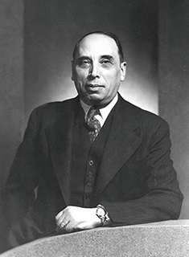

Galerie des personnages
Filtrer par type d'incide
- Personnages
- Objets
- Lieux
Filtrer par secteur d'activité
- Sports et spectacles
- Sciences et lettres
- Économie et politique
- Arts visuels
-

Consulter la fiche d'Edmund Alleyn
-

Consulter la fiche de Philippe-Joseph Aubert de Gaspé
-

Consulter la fiche d'Henriette Belley
-
Consulter la fiche de Marthe Caillaud-Simard
-

Consulter la fiche de Robert Blatter
-

Consulter la fiche de Camille Henry
-
Consulter la fiche de Johnny Farago
-
Consulter la fiche de Joseph Knight Boswell
-
Consulter la fiche de Louis Jobin
-

Consulter la fiche d'Alfred Pellan
-

Consulter la fiche de Sigismund Mohr
-

Consulter la fiche de Maurice Pollack